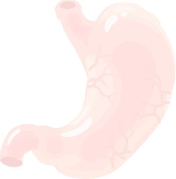
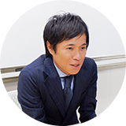
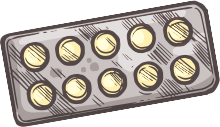

-
循環器営業部
循環器営業部は、主に虚血領域の治療と不整脈領域の治療に使用する医療機器を医療機関に収めている営業部です。まず患者様の治療に最適な医療機器を医療従事者の方々とコミュニケーションをとり準備するのは、最低限の仕事です。エム・イーが目指しているのは、最低限の仕事ではなく、より高度な知識と技術を持ち、医療従事者の方々も気が付かないところまで提案できることを目指しています。医療は日進月歩の世界です。新人もベテランも常に勉強し続けなければいけない厳しさもありますが、逆にそれが患者様やドクター、治療の役立ちの一旦を担える事に、とてもやりがいを感じることができます。
- 最良の医療材料を準備することは最低限の仕事。ただこの仕事をこなすにも知識と技術が必要になります。加えて、物流の効率化、チームの生産性の最大化、営業のスキルレベルアップを常にみんなで共有しています。
-
メディカルディーテック営業部

メディカルディーテック営業部は、内視鏡システム（胃カメラ）及び消化器関係機器を中心に、ポータブルエコーや簡易的システムなどの販売を行っている営業部です。
営業に加えメンテナンスサービスも行っており、対象病院としては、総合病院だけでなくクリニックにも様々な医療機器をご提案しています。
内視鏡システムを多くの施設で導入していただくことにより、胃がんなどの病気を早期に発見でき、また最新の画像診断機器により、多くの先生方に最新の治療方法などを提供できています。現場では先生、スタッフとの距離感が近く、緊張感の中にもコミュニケーションを楽しんでいる営業が多くいます。
そういった雰囲気を作ることにより、お客様からの信頼を得ることができ、この信頼関係が内視鏡システムに限らず新たな機器購入時にもお客様より指名をしていただける理由の1つとなっています。また、日々のルートセールスにおいてはご要望のご注文品をお客様へお届けしています。業務内容においても営業それぞれが「エリアが違うから」、「サービスだから」、という他人事は一切ありません。常に困ったこと、問題点などは皆で共有しあい解決をすることを心掛けています。
役職の違いによる壁もほとんどないので、相談がしやすく、意見の言いやすい、そんな環境を実現できています。良いことも、悪いことも、何でも共有できる雰囲気づくりをとても大事にしています。
-
消化器営業部 部長 小平 寛
- メディカルディーテック営業部は自分で考えてお客様へ商品提案することができる発想の自由さがあります。医療機器の選択や現場でのデモンストレーションなど、お客様のニーズにこたえるプロデュースを自分自身でできるので、思い通りの営業スタイルを実現でき、その結果が成果となった時、お客様とのより強固な信頼関係が構築でき達成感を感じることができます。
そのために日々のメンテナンスサービスに付随する消耗品提供等も重要な仕事です。当営業部では営業とメンテナンスサービスの両方を行うため、スケジュール管理も重要になります。
またリフレッシュをすることにより、より一層いい仕事ができると考えていますので、休暇に対しても皆で業務の体制を考えて計画的に取りやすい環境にしています。
当営業部では、常に問題点は皆で共有し解決をすることを心掛けています。エリアや役職の違いによる壁もないので、相談がしやすく、意見の言いやすい、そんな環境を実現できています。
-
-

心臓血管外科営業部
心臓血管外科営業部では、主に開心術・弁膜症・大動脈血管・心不全・ニューロモデュレーション治療に関わる製品を取り扱っています。
一見とても取り扱いが難しい印象を受けられるかもしれませんが、在籍社員の年齢は最少で24歳から平均32歳の若いメンバーが主役となり日々第一線で活躍しています。
近年心臓血管外科治療領域においても低侵襲の治療方法が次々と登場し、常に新しいデバイス（治療機器）が開発されています。そういった治療・製品情報を常に吸収し、病院様はもちろん・最終的には患者様がいるという事を念頭に置き皆で取り組んでいます。-

心臓血管外科営業部 部長 佐々木 妙夫
- 専門的知識を持ち、その知識とスキルを常にアップデートし先生方や病院スタッフの皆様方のサポートを日々行っています。そういった活動を通し患者様の治療に関わる事でやりがいを感じられる仕事です。また、若いメンバーが主役となり和気あいあいと日々取り組んでいます。仲が良いだけではなく、時に厳しく相手の事を真剣に想い提言出来る職場作りを心がけ結果一丸となり皆が同じ方向を向いて進んで行ける営業部です。
-
-
EPスペシャリスト
EPスペシャリストは2019年に創設された新しい事業部で現在5名が在籍しています。不整脈の治療であるアブレーションに対して専門的な知識と技術を持って、日々手術に立会いながら先生や現場スタッフへの技術提供・フォローアップを行っています。アブレーションは循環器の分野でも特に専門的な知識が必要となるため、この専門部隊が作られました。
全国的に治療の件数が増えており、また製品やテクノロジーが日々進化するなか、高い技術力と知識を持ってお客様である医療従事者の方々・そしてなにより患者様と日々向き合っています。
難しく感じるかも知れませんが、お互いを助け合える環境があり、メンバーひとり一人が個性を生かしながら活躍しています。
また、お客様に満足していただくためには、まず自分たちが日々を充実させなければいけないと考えています。そのために、日々の密なコミュニケーションや個々のスキルアップのための勉強会、有給取得の推奨などを積極的に行っています。-
EPスペシャリスト マネージャー 長岡 雅臣
- メンバーひとり一人が個性を生かしながら活躍してしていただけるように意識しています。
そのために、独立した意思決定を推奨しており、年齢や役職関係なく仕事においては、お互いが公平であることを念頭においています。
個々を活かすことでチームとしてもより強くなっていると感じています。また日々メンバーはそれぞれ異なる病院で業務を行っているため、情報共有の漏れが無いよう、重要な情報はいち早くチーム内で共有しチーム全員が同じ高いレベルで仕事を行うことができるようにしています。
EPスペシャリストチームの考えに共感していただける方、興味を持っていただいた方は、ぜひいっしょに楽しみながら成長しましょう！
-
-


システム事業部
IT、ICT化の流れは医療分野へも急速に進んおり、現在では導入段階から有効活用へそのステージも日々進化しています。 一口に医療分野と言ってもその範囲は診療、治療、検査、処方、会計、物流、経営など多岐にわたり、それぞれの部門で各社競い合うように研究・開発が進められています。
システム事業部では、病院様の「より質の高い医療を患者様に提供し続ける」という恒久的な命題に対し、各科でのITシステムの導入、活用という形で貢献しています。 当社はシステムメーカーではありませんが、商社であることから様々なメーカーの製品を取り扱えることが特長であり、病院様によって異なる希望・要望に対してメーカーそれぞれの長所を生かした提案することができます。 取り扱っているのはシステム製品ですが、大切なのは「手段としてのシステム」でありシステムそのものではありません。
-
システム事業部 伊藤 秀明
- 自分で考えて提案したいことができる自由さがあり（もちろんどの世界にもマナーはありますが）、苦労して作成した提案内容が顧客に認めてもらえ、また導入された時にはその成果を本当に実感することができます。
まだまだ発展途上のため、一人の成長がそのまま部門の成長に直結することが魅力です。
-